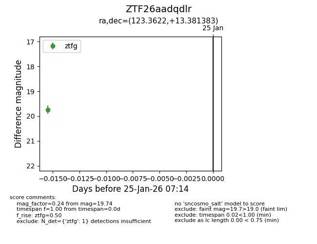
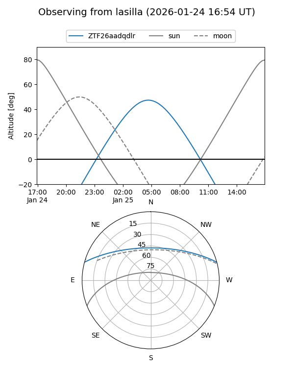
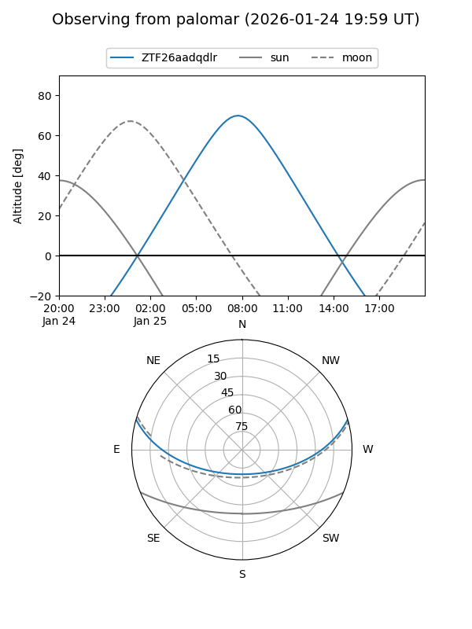

ZTF26aadqdlr
Target ZTF26aadqdlr at 2026-01-25 07:16
Aliases and brokers:
FINK: link
Lasair: link
ALeRCE: link
alt names
ZTF26aadqdlr (ztf,fink_ztf)
Coordinates:
equatorial (ra, dec) = 123.3622,+13.38138
equatorial (HMS+DMS) = 08:13:26.92,+13:22:52.98
galactic (l, b) = (209.7537,+24.12857)
Flags:
Photometry:
last ztfg=19.74
1 ztfg detections
Lightcurve

Visibility


Additional plots